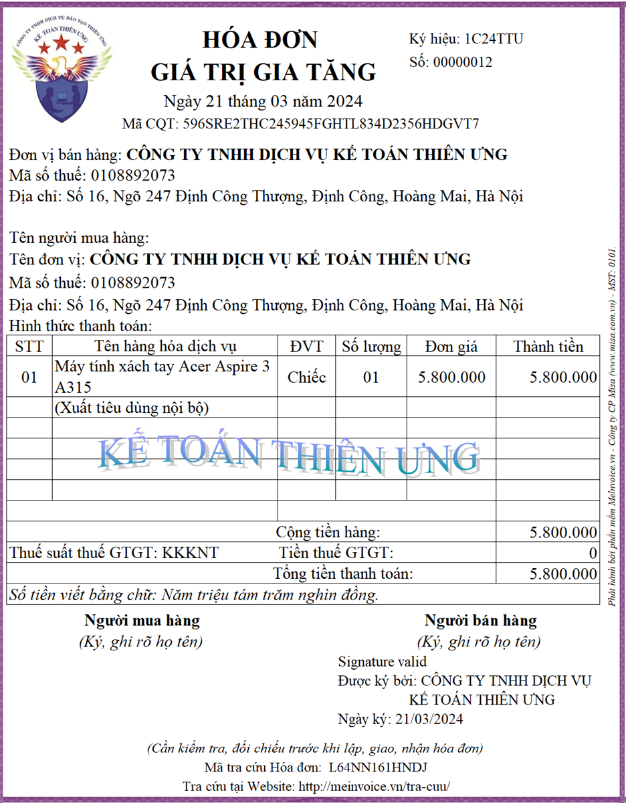
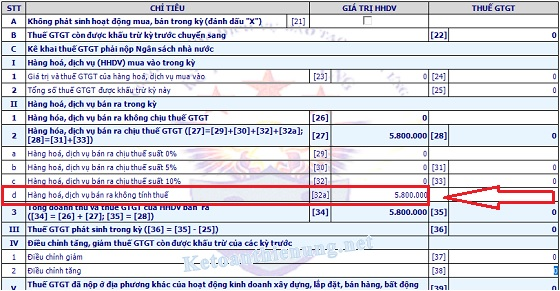

Các trường hợp không phải tính thuế GTGT mới nhất năm 2026 theo Nghị định 181/2025/NĐ-CP hướng dẫn Luật thuế GTGT
Trước ngày 01/07/2025 thì các trường hợp không phải kê khai, tính nộp thuế GTGT được quy định cụ thể tại Điều 5 Thông tư số 219/2013/TT-BTC
Còn từ ngày 01/07/2025 trở đi thì thông tư 219/2013/TT-BTC đã bị thay thế bởi Thông tư 69/2025/TT-BTC quy định chi tiết một số điều của Luật Thuế giá trị gia tăng và hướng dẫn thực hiện Nghị định 181/2025/NĐ-CP
Nhưng trong thông tư 69/2025/TT-BTC không quy định về Các trường hợp không phải kê khai tính nộp thuế GTGT giống như thông tư 219 nữa
Mà chỉ có trong Nghị định 181/2025/NĐ-CP có quy định về các trường hợp không phải tính thuế GTGT như sau:
Điều 6. Giá tính thuế đối với hàng hóa, dịch vụ dùng để trao đổi, tiêu dùng nội bộ, biếu, tặng, cho và hàng hóa, dịch vụ dùng để khuyến mại
1. Đối với hàng hóa, dịch vụ dùng để trao đổi, tiêu dùng nội bộ, biếu, tặng, cho là giá tính thuế giá trị gia tăng của hàng hóa, dịch vụ cùng loại hoặc tương đương tại thời điểm phát sinh các hoạt động này. Trong đó, hàng hóa, dịch vụ tiêu dùng nội bộ là hàng hóa, dịch vụ do cơ sở kinh doanh xuất hoặc cung cấp sử dụng cho tiêu dùng, không bao gồm:
a) Hàng hóa, dịch vụ sử dụng để tiếp tục quá trình sản xuất, kinh doanh của cơ sở kinh doanh như hàng hóa được xuất để chuyển kho nội bộ, xuất vật tư, bán thành phẩm, để tiếp tục quá trình sản xuất, kinh doanh trong một cơ sở kinh doanh.
b) Hàng hóa, dịch vụ do cơ sở kinh doanh xuất hoặc cung cấp sử dụng phục vụ hoạt động sản xuất, kinh doanh (bao gồm cả tài sản cố định do cơ sở kinh doanh tự xây dựng, tự sản xuất).
c) Tài sản điều chuyển giữa các đơn vị thành viên hạch toán phụ thuộc trong cơ sở kinh doanh; tài sản điều chuyển khi chia, tách, hợp nhất, sáp nhập, chuyển đổi loại hình doanh nghiệp; tài sản cố định đang sử dụng, đã thực hiện trích khấu hao khi điều chuyển theo giá trị ghi trên sổ sách kế toán giữa cơ sở kinh doanh và các đơn vị thành viên do một cơ sở kinh doanh sở hữu 100% vốn hoặc giữa các đơn vị thành viên do một cơ sở kinh doanh sở hữu 100% vốn để phục vụ cho hoạt động sản xuất, kinh doanh hàng hóa, dịch vụ chịu thuế giá trị gia tăng; tài sản góp vốn vào doanh nghiệp. Cơ sở kinh doanh có tài sản điều chuyển phải có lệnh điều chuyển tài sản, kèm theo bộ hồ sơ nguồn gốc tài sản. Tài sản góp vốn vào doanh nghiệp phải có: biên bản góp vốn sản xuất kinh doanh, hợp đồng liên doanh, liên kết; biên bản định giá tài sản của Hội đồng giao nhận vốn góp của các bên góp vốn (hoặc văn bản định giá của tổ chức có chức năng định giá theo quy định của pháp luật), kèm theo bộ hồ sơ về nguồn gốc tài sản.
Cơ sở kinh doanh có hàng hóa, dịch vụ quy định tại điểm a, b, c khoản này thì không phải tính thuế giá trị gia tăng.
Điều 9. Giá tính thuế đối với hoạt động đại lý, môi giới mua bán hàng hóa, dịch vụ hưởng hoa hồng và hàng hóa, dịch vụ được sử dụng hóa đơn thanh toán ghi giá thanh toán
1. Đối với hoạt động đại lý, môi giới mua bán hàng hóa và dịch vụ hưởng hoa hồng là tiền hoa hồng thu được từ các hoạt động này chưa có thuế giá trị gia tăng, trừ trường hợp không phải tính thuế giá trị gia tăng gồm:
a) Doanh thu hàng hóa, dịch vụ nhận bán đại lý và doanh thu hoa hồng được hưởng từ hoạt động đại lý bán đúng giá quy định của bên giao đại lý hưởng hoa hồng của dịch vụ: bưu chính, viễn thông, bán vé xổ số, vé máy bay, ô tô, tàu hỏa, tàu thủy; đại lý vận tải quốc tế; đại lý của các dịch vụ ngành hàng không, hàng hải mà được áp dụng thuế suất thuế giá trị gia tăng 0%; đại lý bán bảo hiểm.
b) Doanh thu hàng hóa, dịch vụ và doanh thu hoa hồng đại lý được hưởng từ hoạt động đại lý bán hàng hóa, dịch vụ thuộc diện không chịu thuế giá trị gia tăng.
Điều 28. Điều kiện khấu trừ thuế giá trị gia tăng đầu vào đối với một số trường hợp hàng hóa, dịch vụ đặc thù
9. Trường hợp cơ sở kinh doanh có hàng hóa xuất khẩu đã có xác nhận của cơ quan hải quan nhưng không có đủ các thủ tục, hồ sơ khác về điều kiện khấu trừ thuế giá trị gia tăng đầu vào theo quy định đối với từng trường hợp cụ thể quy định tại Mục này thì không được khấu trừ thuế giá trị gia tăng đầu vào, không phải tính thuế giá trị gia tăng đầu ra. Riêng đối với trường hợp hàng hóa gia công chuyển tiếp, nếu không có đủ các thủ tục, hồ sơ về điều kiện khấu trừ thuế giá trị gia tăng đầu vào theo quy định thì phải tính và nộp thuế giá trị gia tăng như hàng hóa tiêu thụ nội địa. Đối với cơ sở kinh doanh có dịch vụ xuất khẩu nếu không đáp ứng điều kiện về thanh toán không dùng tiền mặt theo quy định thì không được khấu trừ thuế giá trị gia tăng đầu vào, không phải tính thuế giá trị gia tăng đầu ra.
================
Các trường hợp không phải kê khai, tính nộp thuế GTGT trước ngày 01/07/2025 được quy định cụ thể tại Điều 5 Thông tư số 219/2013/TT-BTC (đã được bổ sung theo Điều 3 Thông tư 119/2014/TT-BTC và Điều 1 Thông tư 193/2015/TT-BTC) như sau:
1. Tổ chức, cá nhân nhận các khoản thu về bồi thường bằng tiền (bao gồm cả tiền bồi thường về đất và tài sản trên đất khi bị thu hồi đất theo quyết định của cơ quan Nhà nước có thẩm quyền), tiền thưởng, tiền hỗ trợ, tiền chuyển nhượng quyền phát thải và các khoản thu tài chính khác.- Cơ sở kinh doanh khi nhận khoản tiền thu về bồi thường, tiền thưởng, tiền hỗ trợ nhận được, tiền chuyển nhượng quyền phát thải và các khoản thu tài chính khác thì lập chứng từ thu theo quy định.
- Đối với cơ sở kinh doanh chi tiền, căn cứ mục đích chi để lập chứng từ chi tiền.
- Trường hợp bồi thường bằng hàng hóa, dịch vụ, cơ sở bồi thường phải lập hóa đơn và kê khai, tính, nộp thuế GTGT như đối với bán hàng hóa, dịch vụ;
- Cơ sở nhận bồi thường kê khai, khấu trừ theo quy định.
- Trường hợp cơ sở kinh doanh nhận tiền của tổ chức, cá nhân để thực hiện dịch vụ cho tổ chức, cá nhân như sửa chữa, bảo hành, khuyến mại, quảng cáo thì phải kê khai, nộp thuế theo quy định.
-----------------------------------------------------------------------
Ví dụ 1: Công ty Kế toán Diệu Tâm nhận được khoản tiền lãi từ việc mua trái phiếu và tiền cổ tức từ việc mua cổ phiếu của các doanh nghiệp khác.-> Công ty không phải kê khai, nộp thuế GTGT đối với khoản tiền lãi từ việc mua trái phiếu và tiền cổ tức nhận được.
Ví dụ 2: Doanh nghiệp A nhận được khoản bồi thường thiệt hại do bị hủy hợp đồng từ doanh nghiệp B là 50 triệu đồng.
-> Thì doanh nghiệp A lập chứng từ thu và không phải kê khai, nộp thuế GTGT đối với khoản tiền trên.
Ví dụ 3: Doanh nghiệp X mua hàng của doanh nghiệp Y, doanh nghiệp X có ứng trước cho doanh nghiệp Y một khoản tiền và được doanh nghiệp Y trả lãi cho khoản tiền ứng trước đó.
-> Thì doanh nghiệp X không phải kê khai, nộp thuế GTGT đối với khoản lãi nhận được.
Ví dụ 4: Doanh nghiệp X bán hàng cho doanh nghiệp Z, tổng giá thanh toán là 440 triệu đồng. Theo hợp đồng, doanh nghiệp Z thanh toán trả chậm trong vòng 3 tháng, lãi suất trả chậm là 1%/tháng/tổng giá thanh toán của hợp đồng. Sau 3 tháng, doanh nghiệp X nhận được từ doanh nghiệp Z tổng giá trị thanh toán của hợp đồng là 440 triệu đồng và số tiền lãi chậm trả là 13,2 triệu đồng (440 triệu đồng x 1% x 3 tháng).
-> Thì doanh nghiệp X không phải kê khai, nộp thuế GTGT đối với khoản tiền 13,2 triệu đồng này.
Ví dụ 5: Doanh nghiệp bảo hiểm A và Công ty B ký hợp đồng bảo hiểm với hình thức bảo hiểm bằng tiền. Khi có rủi ro bảo hiểm xảy ra, doanh nghiệp bảo hiểm A bồi thường cho Công ty B bằng tiền theo quy định của pháp luật về bảo hiểm.
-> Công ty B không phải kê khai, nộp thuế GTGT đối với số tiền bồi thường bảo hiểm nhận được.
Ví dụ 6: Công ty cổ phần Sữa ABC có chi tiền cho các nhà phân phối (là tổ chức, cá nhân kinh doanh) để thực hiện chương trình khuyến mại (theo quy định của pháp luật về hoạt động xúc tiến thương mại), tiếp thị, trưng bày sản phẩm cho Công ty (nhà phân phối nhận tiền này để thực hiện dịch vụ cho Công ty) thì khi nhận tiền:
- Trường hợp nhà phân phối là người nộp thuế GTGT theo phương pháp khấu trừ lập hóa đơn GTGT và tính thuế GTGT theo thuế suất 10%
- Trường hợp nhà phân phối là người nộp thuế GTGT theo phương pháp trực tiếp thì sử dụng hóa đơn bán hàng và xác định số thuế phải nộp theo tỷ lệ (%) trên doanh thu theo quy định.
-----------------------------------------------------------------------
- Sửa chữa phương tiện vận tải, máy móc, thiết bị (bao gồm cả vật tư, phụ tùng thay thế);
- Quảng cáo, tiếp thị;
- Xúc tiến đầu tư và thương mại;
- Môi giới bán hàng hóa, cung cấp dịch vụ ra nước ngoài;
- Đào tạo;
- Chia cước dịch vụ bưu chính, viễn thông quốc tế giữa Việt Nam với nước ngoài mà các dịch vụ này được thực hiện ở ngoài Việt Nam, dịch vụ thuê đường truyền dẫn và băng tần vệ tinh của nước ngoài theo quy định của pháp luật.
--------------------------------------------------------------------------------
Ví dụ 7: Ông Minh Quân là cá nhân không kinh doanh bán 01 ô tô 4 chỗ ngồi cho ông B với giá là 600 triệu đồng.
-> Thì ông A không phải kê khai, tính thuế GTGT đối với số tiền bán ô tô thu được.
Ví dụ 8: Ông Minh Đức là cá nhân không kinh doanh thế chấp 01 ô tô 5 chỗ ngồi cho ngân hàng VC để vay tiền. Đến thời hạn phải thanh toán theo hợp đồng, Ông Minh Đức không thanh toán được cho ngân hàng VC nên tài sản là ô tô thế chấp bị bán phát mại để thu hồi nợ.
-> Thì khoản tiền thu được từ bán phát mại chiếc ôtô thế chấp nêu trên không phải kê khai, tính thuế GTGT.
--------------------------------------------------------------------------------
Ví dụ 9: Công ty cổ phần P thực hiện dự án đầu tư xây dựng Nhà máy sản xuất cồn công nghiệp. Đến tháng 3/2023, dự án đầu tư đã hoàn thành được 90% so với đề án thiết kế và giá trị đầu tư là 26 tỷ đồng. Do gặp khó khăn về tài chính, Công ty cổ phần P quyết định chuyển nhượng toàn bộ dự án đang đầu tư cho Công ty cổ phần X với giá chuyển nhượng là 28 tỷ đồng. Công ty cổ phần X nhận chuyển nhượng dự án đầu tư trên để tiếp tục sản xuất cồn công nghiệp.
-> Công ty cổ phần P không phải kê khai, nộp thuế GTGT đối với giá trị dự án chuyển nhượng cho Công ty cổ phần X.
-----------------------------------------------------------------------
-> Thì không phải kê khai, tính nộp thuế GTGT.
-> Trên hóa đơn GTGT, ghi dòng giá bán là giá không có thuế GTGT, dòng thuế suất và thuế GTGT không ghi, gạch bỏ.
- Trường hợp bán cho các đối tượng khác như hộ, cá nhân kinh doanh và các tổ chức, cá nhân khác
-> Thì phải kê khai, tính nộp thuế GTGT theo mức thuế suất 5% hướng dẫn tại khoản 5 Điều 10 Thông tư 219.
-------------------------------------------------------------------
- Hộ, cá nhân kinh doanh, doanh nghiệp, hợp tác xã và tổ chức kinh tế khác nộp thuế GTGT theo phương pháp tính trực tiếp trên GTGT khi bán sản phẩm trồng trọt, chăn nuôi, thủy sản nuôi trồng, đánh bắt chưa chế biến thành các sản phẩm khác hoặc chỉ qua sơ chế thông thường ở khâu kinh doanh thương mại.-> Thì kê khai, tính nộp thuế GTGT theo tỷ lệ 1% trên doanh thu.
Xem thêm:► Cách kê khai thuế GTGT theo pp trực tiếp
-----------------------------------------------------------------------
- Nếu Công ty lương thực B bán gạo cho Công ty XNK C thì Công ty lương thực B không phải kê khai, tính nộp thuế GTGT đối với số gạo bán cho Công ty XNK C.
- Nếu bán gạo cho Công ty TNHH D (là doanh nghiệp sản xuất bún, bánh phở) thì Công ty lương thực B không phải kê khai, tính nộp thuế GTGT đối với số gạo bán cho Công ty TNHH D.
-> Trên hóa đơn GTGT lập, giao cho Công ty XNK C và Công ty TNHH D, Công ty lương thực B ghi rõ giá bán là giá không có thuế GTGT, dòng thuế suất và thuế GTGT không ghi, gạch bỏ.
- Nếu bán trực tiếp gạo cho người tiêu dùng thì kê khai, nộp thuế GTGT theo mức thuế suất thuế GTGT là 5% theo hướng dẫn tại khoản 5 Điều 10 Thông tư 219.
Xem thêm:► Các mặt hàng chịu thuế suất 5%
-----------------------------------------------------------------------
Ví dụ 11: Công ty TNHH A là CSKD nộp thuế theo phương pháp khấu trừ mua cà phê nhân của nông dân trồng cà phê, sau đó Công ty TNHH A bán số cà phê nhân này cho hộ kinh doanh H thì doanh thu của Công ty TNHH A từ bán cà phê nhân cho hộ kinh doanh H áp dụng mức thuế suất 5%.
-------------------------------------------------------------------------
Ví dụ 12: Hộ ông X sau khi thu mua lá chè của hộ trồng chè đã bán ra cho hộ ông Y thì hộ ông X phải tính, nộp thuế GTGT theo tỷ lệ 1% trên doanh thu bán lá chè cho hộ ông Y.--------------------------------------------------------------------------
-> Thì không phải lập hóa đơn và kê khai, nộp thuế GTGT.
- Cơ sở kinh doanh có tài sản cố định điều chuyển phải có Quyết định hoặc Lệnh điều chuyển tài sản kèm theo bộ hồ sơ nguồn gốc tài sản.
- Trường hợp tài sản cố định khi điều chuyển đã thực hiện đánh giá lại giá trị tài sản hoặc điều chuyển cho cơ sở sản xuất kinh doanh hàng hóa, dịch vụ không chịu thuế GTGT
-> Thì phải lập hóa đơn GTGT, kê khai, nộp thuế GTGT theo quy định.
--------------------------------------------------------------------------------
Cơ sở kinh doanh không phải kê khai, nộp thuế trong các trường hợp sau:
a) Góp vốn bằng tài sản để thành lập doanh nghiệp. Tài sản góp vốn vào doanh nghiệp phải có:
- Biên bản góp vốn sản xuất kinh doanh, hợp đồng liên doanh, liên kết;
- Biên bản định giá tài sản của Hội đồng giao nhận vốn góp của các bên góp vốn (hoặc văn bản định giá của tổ chức có chức năng định giá theo quy định của pháp luật)
- Kèm theo bộ hồ sơ về nguồn gốc tài sản.
b) Điều chuyển tài sản giữa các đơn vị hạch toán phụ thuộc trong doanh nghiệp; điều chuyển tài sản khi chia, tách, hợp nhất, sáp nhập, chuyển đổi loại hình doanh nghiệp.
Tài sản điều chuyển giữa các đơn vị thành viên hạch toán phụ thuộc trong cơ sở kinh doanh; tài sản điều chuyển khi chia, tách, hợp nhất, sáp nhập, chuyển đổi loại hình doanh nghiệp thì cơ sở kinh doanh có tài sản điều chuyển phải có:
- Lệnh điều chuyển tài sản.
- Kèm theo bộ hồ sơ nguồn gốc tài sản và không phải xuất hóa đơn.
- Trường hợp tài sản điều chuyển giữa các đơn vị hạch toán độc lập hoặc giữa các đơn vị thành viên có tư cách pháp nhân đầy đủ trong cùng một cơ sở kinh doanh
-> Thì cơ sở kinh doanh có tài sản điều chuyển phải xuất hóa đơn GTGT và kê khai, nộp thuế GTGT theo quy định, trừ trường hợp hướng dẫn tại khoản 6 (nêu trên)
c) Thu đòi người thứ 3 của hoạt động bảo hiểm.
d) Các khoản thu hộ không liên quan đến việc bán hàng hóa, dịch vụ của cơ sở kinh doanh.
đ) Doanh thu hàng hóa, dịch vụ nhận bán đại lý và doanh thu hoa hồng được hưởng từ hoạt động đại lý bán đúng giá quy định của bên giao đại lý hưởng hoa hồng của dịch vụ:
- Bưu chính, viễn thông, bán vé xổ số, vé máy bay, ô tô, tàu hoả, tàu thủy;
- Đại lý vận tải quốc tế;
- Đại lý của các dịch vụ ngành hàng không, hàng hải mà được áp dụng thuế suất thuế GTGT 0%;
- Đại lý bán bảo hiểm.
e) Doanh thu hàng hóa, dịch vụ và doanh thu hoa hồng đại lý được hưởng từ hoạt động đại lý bán hàng hóa, dịch vụ thuộc diện không chịu thuế GTGT.
Xem thêm:► Hạch toán đại lý bán đúng giá hưởng hoa hồng
g) Cơ sở kinh doanh không phải nộp thuế GTGT khâu nhập khẩu trong trường hợp nhập khẩu hàng hóa đã xuất khẩu nhưng bị phía nước ngoài trả lại.
-> Khi cơ sở kinh doanh bán hàng hóa bị trả lại này trong nội địa thì phải kê khai, nộp thuế GTGT theo quy định.
h. Tổ chức, doanh nghiệp nhận các khoản thù lao từ cơ quan nhà nước do thực hiện hoạt động thu hộ, chi hộ các cơ quan nhà nước.
Thù lao thu hộ, chi hộ các cơ quan nhà nước không phải kê khai, tính nộp thuế GTGT quy định tại điểm này là các khoản thù lao nhận được từ hoạt động:
- Thu bảo hiểm xã hội tự nguyện, bảo hiểm y tế tự nguyện cho cơ quan Bảo hiểm xã hội;
- Chi trả trợ cấp ưu đãi cho người có công, trợ cấp khác cho Bộ Lao động và thương binh xã hội;
- Thu thuế của hộ cá nhân cho cơ quan thuế và các khoản thu hộ, chi hộ khác cho cơ quan Nhà nước.
----------------------------------------------------------------------
Mẫu hóa đơn điện tử không phải kê khai nộp thuế GTGT:

------------------------------------------------------------------------------------------------------
Cách kê khai chỉ tiêu 32a trên Tờ khai thuế GTGT 01/GTGT:

-------------------------------------------------------------------------
Thuế GTGT đầu vào của các trường hợp không phải kê khai, tính nộp thuế GTGT có được khấu trừ?
Căn cứ theo Điều 14 Thông tư 219/2013/TT-BTC, quy định nguyên tắc khấu trừ thuế GTGT đầu vào:
"Thuế GTGT đầu vào của hàng hóa, dịch vụ sử dụng cho các hoạt động cung cấp hàng hóa, dịch vụ không kê khai, tính nộp thuế GTGT hướng dẫn tại Điều 5 Thông tư này (trừ khoản 2, khoản 3 Điều 5) được khấu trừ toàn bộ."
Như vậy: Thuế GTGT đầu vào sử dụng cho các hoạt động cung cấp hàng hóa, dịch vụ không kê khai, tính nộp thuế GTGT nêu trên được khấu trừ toàn bộ
-> Chỉ trừ trường hợp mua dịch vụ của tổ chức, cá nhân nước ngoài và Cá nhân không kinh doanh bán TSCĐ.
Căn cứ theo Điều 14 Thông tư 219/2013/TT-BTC, quy định nguyên tắc khấu trừ thuế GTGT đầu vào:
"Thuế GTGT đầu vào của hàng hóa, dịch vụ sử dụng cho các hoạt động cung cấp hàng hóa, dịch vụ không kê khai, tính nộp thuế GTGT hướng dẫn tại Điều 5 Thông tư này (trừ khoản 2, khoản 3 Điều 5) được khấu trừ toàn bộ."
Như vậy: Thuế GTGT đầu vào sử dụng cho các hoạt động cung cấp hàng hóa, dịch vụ không kê khai, tính nộp thuế GTGT nêu trên được khấu trừ toàn bộ
-> Chỉ trừ trường hợp mua dịch vụ của tổ chức, cá nhân nước ngoài và Cá nhân không kinh doanh bán TSCĐ.
---------------------------------------------------------------------
Chúc các bạn thành công!
Các bạn muốn học thực hành tính thuế - kê khai thuế, xử lý hóa đơn chứng từ, Cách xác định chi phí được trừ, không được trừ, Lập tờ khai quyết toán thuế cuối năm... trực tiếp trên chứng từ thực tế.
Có thể tham gia: Lớp học thực hành kế toán thuế chuyên sâu.
Có thể tham gia: Lớp học thực hành kế toán thuế chuyên sâu.
---------------------------------------------------------------------------------